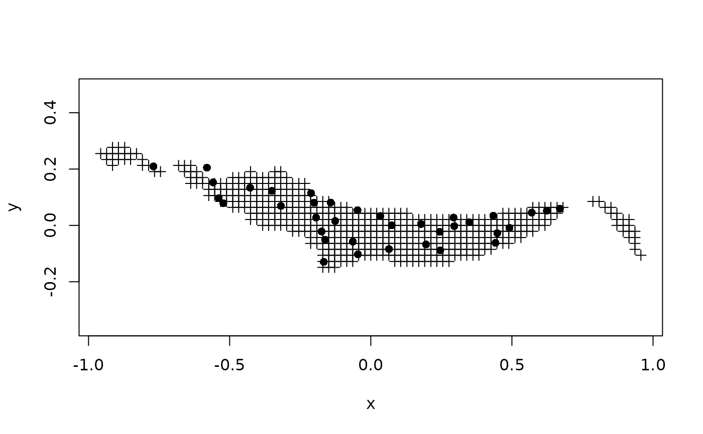

Südliche Tullnerfeld data set
tull.RdThe Südliche Tullnerfeld is a part of the Danube river basin in central Lower Austria and due to its homogeneous aquifer well suited for a model-oriented geostatistical analysis. It contains 36 official water quality measurement stations, which are irregularly spread over the region.
Usage
data(tull)Format
The data frames contain the following columns:
- x
X location in meter
- y
Y location in meter
- S411
Station name
- S429
Station name
- S849
Station name
- S854
Station name
- S1502
Station name
- S1584
Station name
- S1591
Station name
- S2046
Station name
- S2047
Station name
- S2048
Station name
- S2049
Station name
- S2051
Station name
- S2052
Station name
- S2053
Station name
- S2054
Station name
- S2055
Station name
- S2057
Station name
- S2058
Station name
- S2059
Station name
- S2060
Station name
- S2061
Station name
- S2062
Station name
- S2063
Station name
- S2064
Station name
- S2065
Station name
- S2066
Station name
- S2067
Station name
- S2070
Station name
- S2071
Station name
- S2072
Station name
- S2128
Station name
- S5319
Station name
- S5320
Station name
- S5321
Station name
- S5322
Station name
- S5323
Station name
References
Werner G. Müller, Collecting Spatial Data, 3rd edition. Springer Verlag, Heidelberg, 2007
Note
This data set was obtained on May 6, 2008 from http://www.ifas.jku.at/e5361/index_ger.html . The author of the book that uses it is found at: http://www.ifas.jku.at/e2571/e2604/index_ger.html
Examples
data(tull)
# TULLNREG = read.csv("TULLNREG.csv")
# I modified tulln36des.csv, such that the first line only contained: x,y
# resulting in row.names that reflect the station ID, as in
# tull36 = read.csv("tulln36des.csv")
# Chlorid92 was read & converted by:
#Chlorid92=read.csv("Chlorid92.csv")
#Chlorid92$Datum = as.POSIXct(strptime(Chlorid92$Datum, "%d.%m.%y"))
summary(tull36)
#> x y
#> Min. :-0.770000 Min. :-0.12951
#> 1st Qu.:-0.203624 1st Qu.:-0.02397
#> Median :-0.046292 Median : 0.02776
#> Mean : 0.001507 Mean : 0.02739
#> 3rd Qu.: 0.293820 3rd Qu.: 0.07935
#> Max. : 0.670000 Max. : 0.20951
summary(TULLNREG)
#> x y
#> Min. :-0.95700 Min. :-0.14900
#> 1st Qu.:-0.29800 1st Qu.:-0.04300
#> Median :-0.04300 Median : 0.00000
#> Mean :-0.01215 Mean : 0.01995
#> 3rd Qu.: 0.27700 3rd Qu.: 0.06400
#> Max. : 0.95700 Max. : 0.27700
summary(Chlorid92)
#> Datum S411 S429
#> Min. :1992-01-15 23:00:00.000 Min. :10.00 Min. :53.70
#> 1st Qu.:1993-03-22 23:00:00.000 1st Qu.:12.15 1st Qu.:57.23
#> Median :1994-10-16 23:00:00.000 Median :14.20 Median :59.00
#> Mean :1994-08-31 06:16:46.210 Mean :15.30 Mean :59.31
#> 3rd Qu.:1996-01-15 23:00:00.000 3rd Qu.:17.20 3rd Qu.:61.48
#> Max. :1997-03-24 23:00:00.000 Max. :24.30 Max. :65.00
#> NA's :119 NA's :121
#> S849 S854 S1502 S1584
#> Min. :51.00 Min. :56.70 Min. :21.90 Min. :45.00
#> 1st Qu.:57.00 1st Qu.:65.38 1st Qu.:51.25 1st Qu.:50.08
#> Median :58.20 Median :68.75 Median :61.90 Median :54.00
#> Mean :58.26 Mean :70.22 Mean :57.39 Mean :53.90
#> 3rd Qu.:60.00 3rd Qu.:73.47 3rd Qu.:65.95 3rd Qu.:56.88
#> Max. :62.30 Max. :86.90 Max. :71.00 Max. :65.00
#> NA's :124 NA's :137 NA's :119 NA's :131
#> S1591 S2046 S2047 S2048
#> Min. : 6.80 Min. :10.70 Min. :4.700 Min. : 4.400
#> 1st Qu.: 8.70 1st Qu.:11.60 1st Qu.:5.900 1st Qu.: 5.700
#> Median :10.30 Median :15.20 Median :6.600 Median : 6.900
#> Mean :11.07 Mean :14.58 Mean :6.626 Mean : 7.297
#> 3rd Qu.:12.30 3rd Qu.:17.70 3rd Qu.:7.200 3rd Qu.: 9.030
#> Max. :20.10 Max. :19.00 Max. :8.830 Max. :10.800
#> NA's :140 NA's :140 NA's :140 NA's :140
#> S2049 S2051 S2052 S2053
#> Min. :17.90 Min. :16.40 Min. :31.30 Min. :20.60
#> 1st Qu.:20.20 1st Qu.:28.10 1st Qu.:35.40 1st Qu.:29.10
#> Median :25.60 Median :28.90 Median :36.30 Median :30.70
#> Mean :24.14 Mean :29.37 Mean :36.92 Mean :36.32
#> 3rd Qu.:26.90 3rd Qu.:31.20 3rd Qu.:38.70 3rd Qu.:38.80
#> Max. :30.90 Max. :46.20 Max. :41.90 Max. :68.60
#> NA's :140 NA's :140 NA's :140 NA's :140
#> S2054 S2055 S2057 S2058 S2059
#> Min. :25.00 Min. :39.20 Min. :16.4 Min. :21.00 Min. : 8.00
#> 1st Qu.:33.80 1st Qu.:40.50 1st Qu.:33.1 1st Qu.:29.73 1st Qu.:14.40
#> Median :37.90 Median :45.20 Median :42.4 Median :39.40 Median :22.70
#> Mean :38.72 Mean :45.83 Mean :38.9 Mean :38.80 Mean :23.99
#> 3rd Qu.:40.60 3rd Qu.:47.58 3rd Qu.:45.4 3rd Qu.:45.10 3rd Qu.:30.00
#> Max. :66.90 Max. :63.70 Max. :49.0 Max. :70.80 Max. :50.00
#> NA's :140 NA's :141 NA's :140 NA's :141 NA's :140
#> S2060 S2061 S2062 S2063
#> Min. :41.60 Min. :44.50 Min. :49.10 Min. :36.60
#> 1st Qu.:47.40 1st Qu.:49.90 1st Qu.:65.30 1st Qu.:49.20
#> Median :51.60 Median :62.55 Median :67.00 Median :53.20
#> Mean :52.52 Mean :63.59 Mean :66.52 Mean :52.24
#> 3rd Qu.:54.45 3rd Qu.:68.05 3rd Qu.:70.45 3rd Qu.:58.20
#> Max. :72.20 Max. :90.80 Max. :73.40 Max. :61.20
#> NA's :142 NA's :137 NA's :142 NA's :140
#> S2064 S2065 S2066 S2067
#> Min. :50.70 Min. :30.40 Min. : 29.80 Min. :30.00
#> 1st Qu.:61.20 1st Qu.:57.50 1st Qu.: 44.35 1st Qu.:37.60
#> Median :63.70 Median :61.70 Median : 50.30 Median :39.50
#> Mean :66.52 Mean :61.49 Mean : 64.69 Mean :41.38
#> 3rd Qu.:66.60 3rd Qu.:70.10 3rd Qu.: 70.95 3rd Qu.:41.20
#> Max. :97.50 Max. :79.40 Max. :242.00 Max. :90.10
#> NA's :140 NA's :140 NA's :142 NA's :140
#> S2070 S2071 S2072 S2128
#> Min. : 8.70 Min. :11.70 Min. :78.50 Min. :5.300
#> 1st Qu.: 9.50 1st Qu.:13.20 1st Qu.:82.10 1st Qu.:6.500
#> Median :10.10 Median :14.90 Median :84.00 Median :7.600
#> Mean :10.47 Mean :14.81 Mean :84.12 Mean :7.418
#> 3rd Qu.:11.10 3rd Qu.:16.00 3rd Qu.:86.50 3rd Qu.:8.300
#> Max. :16.30 Max. :18.80 Max. :89.90 Max. :9.600
#> NA's :142 NA's :140 NA's :140 NA's :140
#> S5319 S5320 S5321 S5322 S5323
#> Min. :50.30 Min. :114.0 Min. :119 Min. :28.50 Min. :46.20
#> 1st Qu.:52.95 1st Qu.:115.5 1st Qu.:119 1st Qu.:41.90 1st Qu.:53.05
#> Median :55.60 Median :117.0 Median :119 Median :55.30 Median :59.90
#> Mean :54.37 Mean :116.0 Mean :119 Mean :47.97 Mean :55.57
#> 3rd Qu.:56.40 3rd Qu.:117.0 3rd Qu.:119 3rd Qu.:57.70 3rd Qu.:60.25
#> Max. :57.20 Max. :117.0 Max. :119 Max. :60.10 Max. :60.60
#> NA's :158 NA's :158 NA's :160 NA's :158 NA's :158
# stack & join data to x,y,Date,Chloride form:
cl.st = stack(Chlorid92[-1])
names(cl.st) = c("Chloride", "Station")
cl.st$Date = rep(Chlorid92$Datum, length(names(Chlorid92))-1)
cl.st$x = tull36[match(cl.st[,"Station"], row.names(tull36)), "x"]
cl.st$y = tull36[match(cl.st[,"Station"], row.names(tull36)), "y"]
# library(lattice)
# xyplot(Chloride~Date|Station, cl.st)
# xyplot(y~x|Date, cl.st, asp="iso", layout=c(16,11))
summary(cl.st)
#> Chloride Station Date
#> Min. : 4.40 S411 : 161 Min. :1992-01-15 23:00:00.000
#> 1st Qu.: 18.52 S429 : 161 1st Qu.:1993-03-22 23:00:00.000
#> Median : 43.70 S849 : 161 Median :1994-10-16 23:00:00.000
#> Mean : 41.89 S854 : 161 Mean :1994-08-31 06:16:46.210
#> 3rd Qu.: 59.90 S1502 : 161 3rd Qu.:1996-01-15 23:00:00.000
#> Max. :242.00 S1584 : 161 Max. :1997-03-24 23:00:00.000
#> NA's :5050 (Other):4830
#> x y
#> Min. :-0.770000 Min. :-0.12951
#> 1st Qu.:-0.203624 1st Qu.:-0.02397
#> Median :-0.046292 Median : 0.02776
#> Mean : 0.001507 Mean : 0.02739
#> 3rd Qu.: 0.293820 3rd Qu.: 0.07935
#> Max. : 0.670000 Max. : 0.20951
#>
plot(TULLNREG, pch=3, asp=1)
points(y~x, cl.st, pch=16)
